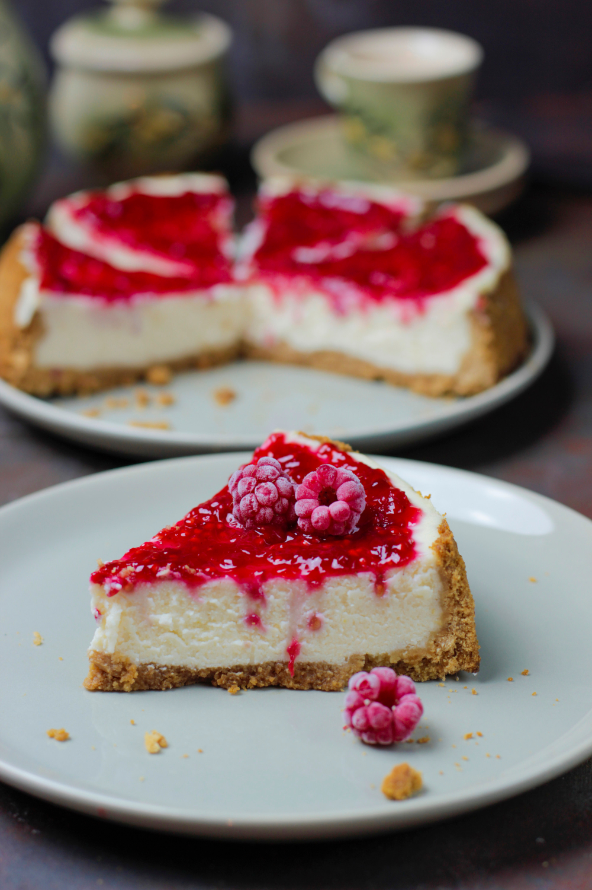

Home
Cheesecake

Description
Cheesecake is a creamy dessert made with a smooth cheese filling on a buttery biscuit crust.
Baked or chilled, it has a rich, velvety texture and a subtle tang from the cheese.
Often topped with fruit or chocolate, it’s indulgent and elegant in every bite.
Ingredients
- Cream cheese: The main component, providing a smooth and creamy base.
- Sugar: Sweetens the filling and balances the tang of the cheese.
- Eggs: Help set the cheesecake and create a custard-like texture.
- Vanilla extract: Adds warm, aromatic flavor.
- Crust: Made from crushed graham crackers mixed with melted butter and sugar.
- Sour cream: Adds richness and a slight tang to the filling.
- Lemon zest: Optional, for a hint of brightness and freshness.
- Topping: Fresh berries, fruit compote, or chocolate ganache.
Steps
- Prepare the crust
- Crush the graham crackers and mix with melted butter and sugar.
- Press the mixture into the bottom of a springform pan.
- Bake briefly to set the crust, then let it cool.
- Make the filling
- Beat the cream cheese until smooth.
- Add sugar, sour cream, and vanilla extract, mixing well.
- Beat in the eggs one at a time until fully combined.
- Bake the cheesecake
- Pour the filling over the cooled crust.
- Bake in a water bath until the center is just set.
- Cool slowly, then refrigerate for several hours or overnight.
- Finish and serve
- Top with fruit, compote, or chocolate ganache.
- Slice and serve chilled.